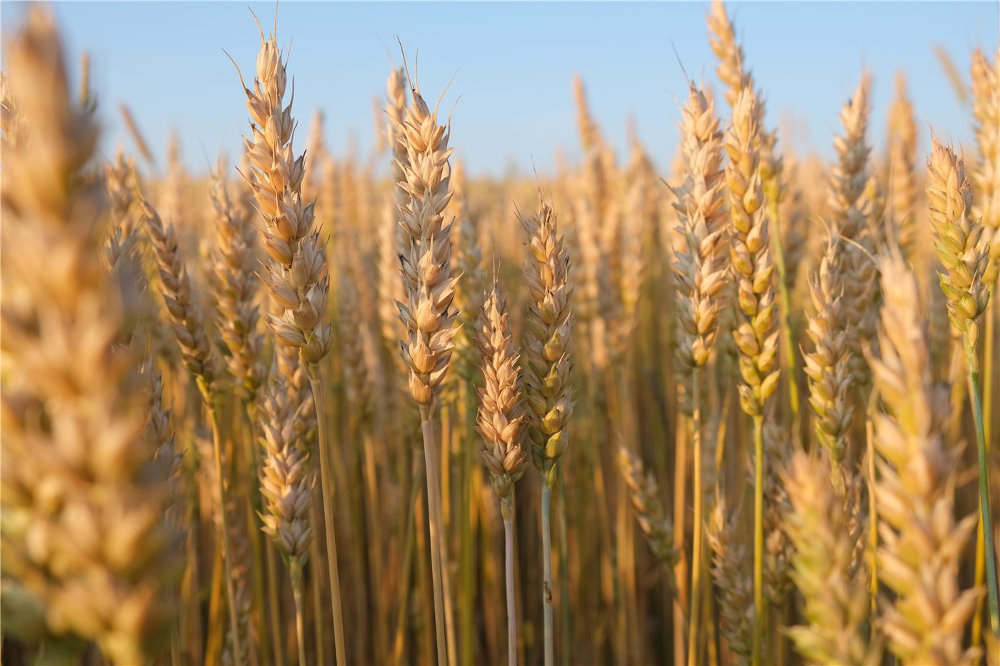

'싼샤(三夏)' 수확철, 산둥 빈저우의 풍년 풍경…식량안보 다지기
여름 수확·파종·관리가 겹치는 '싼샤' 시기를 맞아 중국 곡창지대가 분주하다. 식량안보를 떠받치는 주요 농업성의 역할이 강조됐다.
강패산 기자 · 2026.06.18
橋농업·식량

환구망은 산둥성 빈저우(濱州)에서 '싼샤' 시기 밀을 거두고 말리는 풍년 풍경이 펼쳐졌다고 전했다. 싼샤는 여름철 수확·파종·작물 관리가 동시에 이뤄지는 농번기를 말한다.
광고 문의 · 300×250중국 지도부는 식량 생산이 많은 주요 성들이 식량안보의 '안정추(壓艙石)' 역할을 굳건히 하라고 거듭 당부해 왔다. 안정적 생산과 비축이 물가와 민생의 토대라는 인식이다.
기후 변동과 국제 곡물 가격의 출렁임 속에서, 자국 생산 기반을 다지는 일은 여러 나라의 공통 과제이기도 하다. 수확기의 기상과 물류는 한 해 작황을 가르는 변수다.
華橋時報는 이를 농업·식량안보 분야의 계절 보도로 전한다. 곡물 수급의 안정은 식자재 물가를 통해 화인 식당과 가계에도 닿는다.
출처·참고 (사실 확인용 — 본문은 직접 재작성)
· 環球網
· 環球網